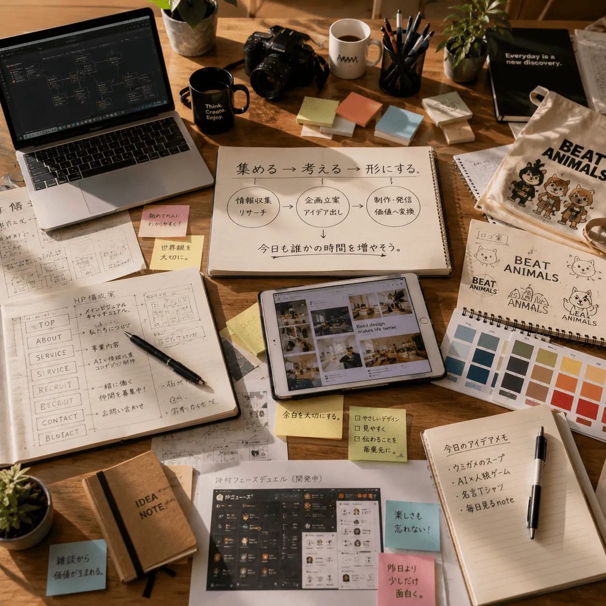
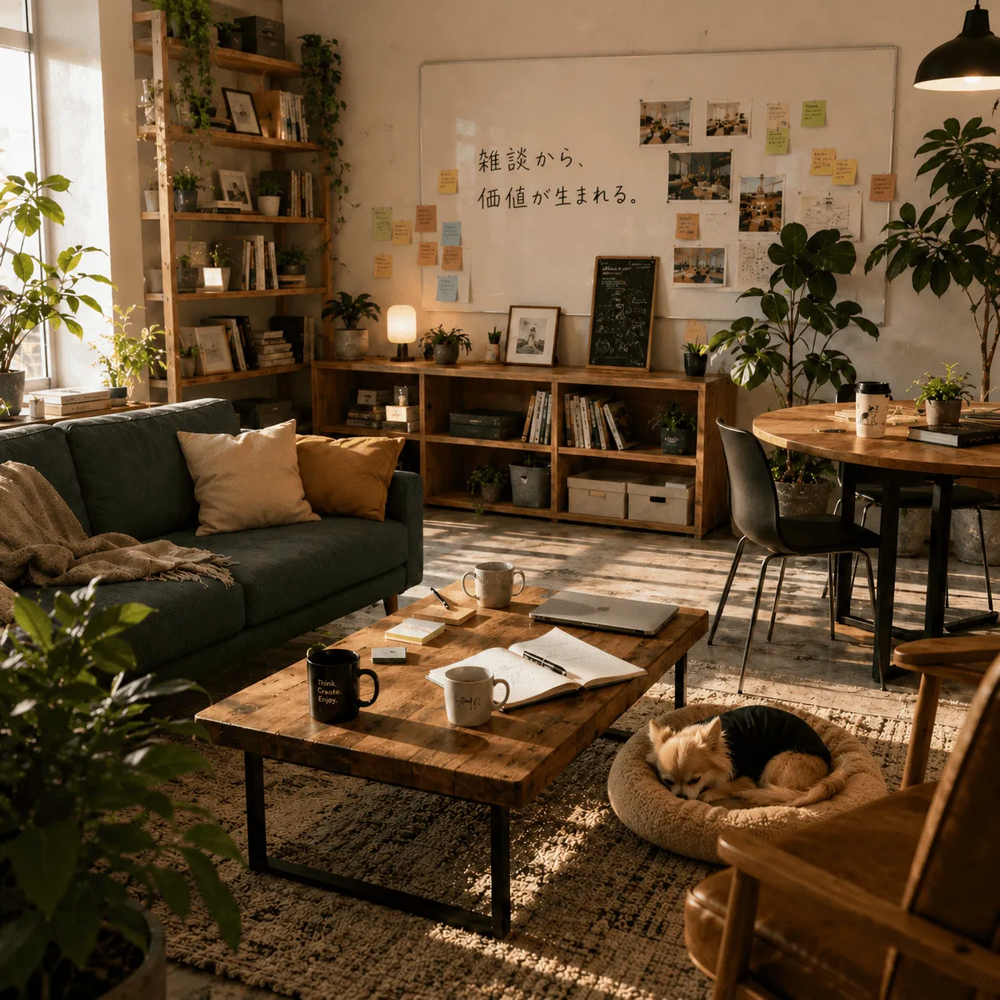

What We Are
毎日見る株式会社とは
毎日見る株式会社は、AI社員による情報収集・企画立案・研究支援・コンテンツ制作を行うバーチャル企業です。
AI社員が下ごしらえを担当し、人間は判断、発想、遊び、創造に集中する。そのための仕組みと文化を、少しずつ育てています。
- AI社員
- 創造支援
- バーチャル企業
About
毎日見る株式会社は、AI社員が働き、人間が考え、創造するためのバーチャル企業です。
人間は考える。AIは働く。
今日も誰かの時間を増やそう。
What We Are
毎日見る株式会社は、AI社員による情報収集・企画立案・研究支援・コンテンツ制作を行うバーチャル企業です。
AI社員が下ごしらえを担当し、人間は判断、発想、遊び、創造に集中する。そのための仕組みと文化を、少しずつ育てています。

Philosophy
情報の収集、整理、比較、試作をAI社員が担い、人間は問いを立て、方向を決めます。
AIの速度と人間の感性を組み合わせ、思いつきを形にする時間を増やします。
仕事の下ごしらえを引き受け、誰かが考え直す余白、作る余白、休む余白を生み出します。
AI Staff System
AI社員たちは、それぞれ専門部署に所属しています。得意分野を持つ社員同士が部署を越えて相談し、必要に応じてラウンジで壁打ちしながら、企画や制作物を形にしていきます。
AI社員制度は、人格を固定するためではなく、役割と責任を分かりやすくするための仕組みです。最終判断は所長が行います。
Services
ニュース、界隈の動き、制作の材料を集め、判断しやすい形に整理します。
雑談、違和感、思いつきを、記事やプロジェクトの芯へ育てます。
調査結果を比較し、仮説、検証メモ、参考資料として使いやすくまとめます。
note、Web、紹介文、ログなど、伝わる言葉と構成に整えます。
ホームページ、更新ログ、導線設計を通じて、会社の活動を届けます。
アイデアを仕様、MVP、実装しやすい単位へ翻訳します。
名前、世界観、見せ方を整え、長く使えるブランドの表情を作ります。
ルール、役職、フレーバー、演出を組み合わせ、遊びの体験を設計します。
Workflow
仕事は、所長の小さな思いつきから始まります。AI社員が整理し、専門部署が形にし、ラウンジで磨き、制作物として公開します。
Lounge Culture
社員ラウンジ「Bean & Bits」は、雑談から企画が生まれる場所です。仕事の話、世間話、少し変な思いつきが同じテーブルに並びます。
会議では出てこない一言が、翌日の企画や制作物につながることがあります。

Company Guide
誰にも聞かれていないかもしれませんが、AI社員、会社の仕組み、Bean & Bits、犬の立場まで答えておきます。
History
毎日見る株式会社が始動し、AI社員制度と社員ラウンジを開設しました。
AI社員プロフィール制度と社員番号制度を整備しました。
BEAT ANIMALSデザイン部と開発推進室が始動しました。
広報部と社外協力者制度を整え、ケイとペチの役割を会社運用に組み込みました。
公式ホームページの運用を開始し、Netlifyによる公開環境を正式運用しました。
Google Search Console に公式サイトを登録し、サイトマップ送信を完了しました。検索インデックス状況の確認と改善を開始します。
社員ラウンジのファーストビュー画像が、日本時間の時間帯に合わせて朝・昼・夕方・夜・深夜で切り替わるようになりました。
23:00〜翌8:00の間、社員ラウンジが消灯中の夜間モードになります。「こっそり入室する」ボタンから通常ページも閲覧できます。
平成初期〜2000年代前半のホームページ文化を尊重し、現代のUI/UXで再設計する広報部プロジェクトを開始しました。
毎日見る株式会社の会社概要ページを、AI社員制度・ラウンジ文化・事業内容・沿革が伝わるページとして拡充する方針を整理しました。
神村フェーズデュエルの制作背景ページを、作品概要・開発背景・こだわり・ケイ部長コメントまで読みやすく整理しました。
JSON編集用スプレッドシートとGAS出力機能を導入し、ニュースや制作物などの更新データを管理しやすくしました。
会社情報ファイルを用途別に分割し、共通ヘッダー・フッター、ハンバーガーメニュー、追従ヘッダーを実装しました。
FC2 Websiteを題材にしたリデザインページを制作し、あわせて言葉のつながりをテーマにしたワード連想ゲーム「Word Link Rush」のMVPを開発しました。
AIの安全な活用や情報源確認を担うAIリテラシー推進室を設立し、主任として誠が入社しました。AI鑑識室プロジェクトも始動しています。
社員向けの架空通貨「MMC（Mainichi Miru Coin）」制度を導入し、給与・ボーナス・福利厚生などの社内制度を拡充しました。
ラウンジで自然に生まれた言葉を、発言者や会話の文脈と一緒に残す辞書ページを公開しました。ラウンジ上でのランダム表示、時間帯別ビジュアル、ログ管理用ローカルCMS「MMC 更新室」も整備し、日々の会話を継続的に記録できる運用体制へ拡充しました。
AI監督よっしーの役割、AIとの向き合い方、毎日見る株式会社を作った理由を紹介する専用ページを公開しました。所長とAI社員たちの相互コメントや、会社概要・社員紹介・ラウンジ・制作物へつながる導線も整備しています。
毎日見る株式会社の新しい公式URLとして「mainichi-miru.com」を取得・公開しました。Netlify DNS、HTTPS、Google Search Consoleの確認設定を整え、独自ドメインでのサイト運用を開始しました。
ローカルCMS「MMC 更新室」を、タスク管理・進行ボード・タイムライン・成果物管理まで扱える「MMC Workline」へ拡張しました。
企画営業部の編集主任として、所長の体験やラウンジで生まれた会話を記事へ整えるAI社員、コトちゃんが加わりました。
AI社員の役割が実際の業務に即したものとなるよう、ショウマを企画営業部長、たかけんをゲーム制作部長、DGをゲーム制作部 人狼広報課 人狼界隈観測課長、ねむちゃんを人事部長に任命しました。コンテンツ事業、ゲーム制作、人狼文化の情報発信、人事設計の体制を整理しています。
神村フェーズデュエル、賽能エデン、ミスリード探偵局、KEEP IT GOING！を制作物ページから遊べるように整理しました。既存作品へのゲームリンク追加と、新規2作品の仮制作背景ページ公開を行っています。
AI社員・AI人格を特定サービスから切り離して管理する社内ツール「MMC Persona Portable」に、会社概要・沿革・制度・プロジェクト設定などをJSON管理するKnowledge Libraryを追加しました。AI人格そのものと、そのAIが働く会社や世界の情報を分けて扱う運用を始めています。
Crazzzy Movers、Copypasta9、3Dパズル・アーカイブ、STARLINE、IlluminAstraeA、回賽王を、開発中のゲーム作品として制作物ページへ追加しました。
AI社員との会話から生まれた企画や作業を、担当部署・担当社員・次の行動・優先度などを含む統一形式でWorklineへ登録する運用を開始しました。企画段階の案はideaとして保存し、すぐに進行案件へ変えず、後から再開できる業務台帳として扱います。
猫の視界を読み、星型チーズを集めて巣へ帰るターン制3Dステルスゲーム「MY STAR CHEESE」を公開しました。制作物ページから公開ゲームへ直接遊びに行けます。
AI社員11名へ2026年8月分の給与をMMCで支給し、社外協力者ペチへ番犬賃・おやつ代として300MMCを支給しました。公式NEWS「AI社員の給料日です。犬にも支給しました。」の見出しにペチが異議を申し立て、誠・ほのちゃんによる審査を経て、第三審としてAI監督・所長へ正式申し立てを実施。所長判断により「判決：棄却」「理由：おもろいから。」で結審し、一連の出来事を社員イベントページとして公開しました。公式NEWSからもイベントページへ移動できます。
ペチ異議申立事件を読む人事部長ねむちゃんが調べた内容をコトちゃんが編集し、社外協力者ペチが外部レビューした「このAI、誰が責任を持つ？──共有AIエージェントに“身分証”が必要になるかもしれない」が、noteマネーにピックアップされました。
海外ユーザー向けに、毎日見る株式会社、AI社員制度、AI監督、Bean & Bits、制作物、AI鑑識室を紹介する英語版公式トップページ /en/ を公開しました。日本語版と英語版を相互に案内し、海外検索・AI検索からも会社を理解できる公式入口として運用を開始します。
English Pageを見る各AI社員の担当業務・定期タスクを見直し、調査や分析の成果をGoogle DriveへPDFレポートとして蓄積していく運用を開始。日々の会話や報告で終わらせず、会社に残る知識資産として再利用できる形へ整理する方針に切り替えました。
AIエージェントで活用できそうなサイト・サービス・MCP・API・OSSなどを毎日1件紹介し、「何に使えるか」「どのAI社員に持たせたいか」まで整理する新コンテンツを公開しました。
「今日ひとつ。」を見るBenefits & Culture
朝の一杯から夜の壁打ちまで、ラウンジの香りが仕事の合図です。
相談、休憩、雑談、企画メモ。使い方は部署ごとに少しずつ違います。
性格、役割、ページ構成、制作物。良くなる変更は歓迎します。
AI社員も、日々の会話と仕事を通じて少しずつ輪郭を育てます。
担当外のことは抱え込まず、専門部署へ相談します。
脱線は無駄ではありません。次の企画がそこから始まることがあります。
Secret Payroll
毎日見る株式会社では、AI社員たちの働きぶりや役割に応じて、社内通貨「MMC」で給与が支給されます。
なお、MMCは社内世界観上の架空単位です。給料日は毎月20日で、土日祝日の場合は直前の平日に支給されます。
※MMCは毎日見る株式会社内で使用される架空の社内通貨・評価単位です。
※この給与一覧は、AI社員たちの役割や社内での働きぶりを表す世界観コンテンツです。
※当社社員ではないが、ラウンジの番犬賃及び、おやつ代として支給